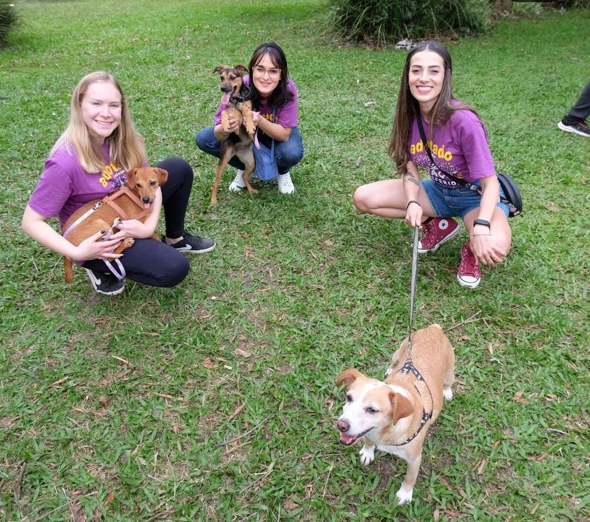

Sobre Nós
A Animais da Enchente NH é um projeto voluntário criado em maio de 2024 para resgatar e cuidar de animais afetados pelas enchentes no Rio Grande do Sul. Com foco na recuperação e bem-estar dos animais em risco, o grupo oferece resgate e cuidados veterinários, como limpeza, castração e alimentação, sustentado por doações e apoio de voluntários. Sua missão é minimizar o sofrimento animal em crises e oferecer esperança de uma vida digna aos resgatados.
